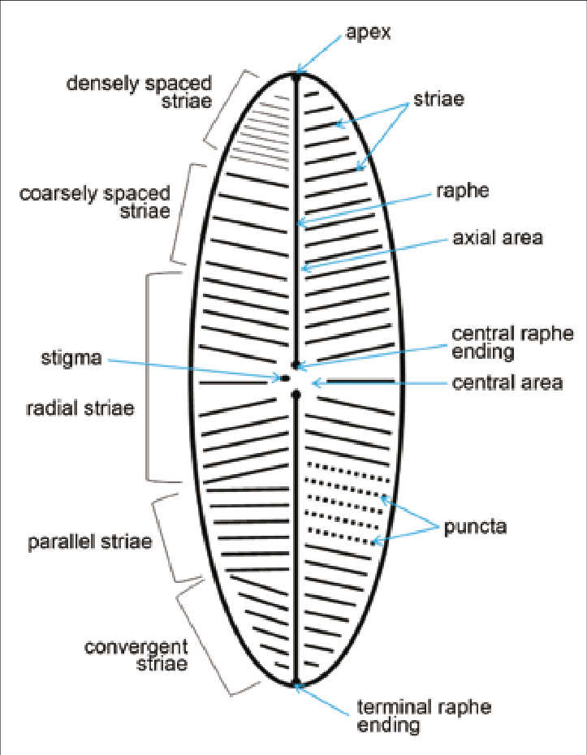

1. องค์ประกอบภายนอก (Cell Envelope)
โครงสร้างภายนอกกำหนดความทนทานต่อสภาพแวดล้อม และมีความหลากหลายสูงในแต่ละไฟลัม
ผนังเซลล์ (Cell Wall)
- ไดอะตอม (Diatoms): มีเปลือกแข็งที่เรียกว่า ฟรัสทูล (Frustule) ทำจากซิลิกา (SiO2.nH2O) มีโครงสร้างละเอียดอ่อนและซับซ้อน
- คลอโรไฟตา (Chlorophyta): ผนังมักประกอบด้วย เซลลูโลส (Cellulose)
แผ่นเปลือก (Pellicle)
- เป็นชั้นโปรตีนยืดหยุ่นใต้เยื่อหุ้มเซลล์ พบในกลุ่มที่ไม่มีผนังเซลล์แข็ง เช่น ยูกลีนา

ภาพตัวอย่าง Diatom Frustule (เปลือกซิลิกา)